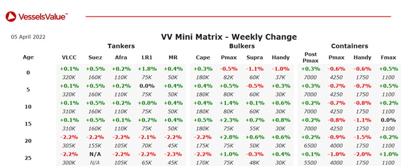

Bulkers:Older Panamax bulkers values have firmed.
Panamax Azur (82,300 DWT, Nov 2007, Oshima) Sold to Turkish Buyers for USD 20mil, VV Value USD 19.37mil.
Panamax Rosco Litchi (82,200 DWT, Jan 2011, Tsuneishi Zhoushan) Sold to Undisclosed Buyers for USD 25mil, VV Value USD 22.9mil – BWTS Fitted.
Panamax Evershine (75,900 DWT, Oct 2000, Kanasashi) Sold to Chinese Buyers for USD 12mil, VV Value USD 11.31mil.
Ultramax S Tango, S Hermes, S Echo (61,000-61,300 DWT, Sep 2015-Feb 2016, Imabari, I-S) Sold to Centrofin for USD 95mil, VV Value USD 97.49mil – En Bloc, Fwd Dely.
Supramax Orient Lucky (57,100 DWT, Jul 2010, Bohai Shipbuilding Heavy Industry Co) Sold to Greek Buyers for USD 17.9mil, VV Value USD 19.02mil – BWTS Fitted.
Supramax Amoy Action (57,000 DWT, Nov 2010, Xiamen Shipbuilding Ind) Sold to Greek Buyers for USD 18mil, VV Value USD 16.24mil – BWTS Fitted.
Supramax Vega Rose (55,700 DWT, Jan 2007, Kawasaki) Sold to Chinese Buyers for USD 18.2mil, VV Value USD 17.8mil – DD Due.
Handy BC Nikolaos GS (28,600 DWT, May 2002, Imabari) Sold to Undisclosed Buyers for USD 9.1mil, VV Value USD 9.41mil.
Handy BC (Open Hatch) Mount Adams (28,500 DWT, May 2002, Kanda) Sold to Undisclosed Buyers for USD 9.8mil, VV Value USD 9.62mil BWTS Fitted.
Tankers:Modern VLCC Tankers have firmed.
VLCC Tokio (306,200 DWT, Feb 2005, Mitsubishi HI) Sold to Chinese Buyers for USD 29.5mil, VV Value USD 31.92mil.
VLCC Eastern Juniper (305,700 DWT, Mar 2007, Daewoo) Sold to Middle Eastern Buyers for USD 36.5mil, VV Value USD 36.15mil – SS Due.
Suezmax Bari (159,200 DWT, Apr 2005, Hyundai Heavy Ind) Sold to Greek Buyers for USD 21.5mil, VV Value USD 19.93mil – BWTS Fitted.
Suezmax Da Yuan Hu (159,100 DWT, Jun 2004, Bohai Shipbuilding Heavy Industry Co) Sold to Undisclosed Buyers for USD 16.5mil, VV Value USD 18.22mil – DD Due.
Aframax Advantage Anthem, Advantage Avenue (115,800-116,100 DWT, Jun 2010-Sep 2011, Samsung) Sold to Synergy Marine Pte for USD 57mil, VV Value USD 57.82mil – En Bloc, DD Due.
LR2 STI Carnaby, STI Savile Row (110,000 DWT, Jun-Sep 2015, Sungdong) Sold to Advantage Tankers for USD 86mil, VV Value USD 86.87mil – En Bloc.
Containers:Panamax Containers have softened.
No sales to report.
